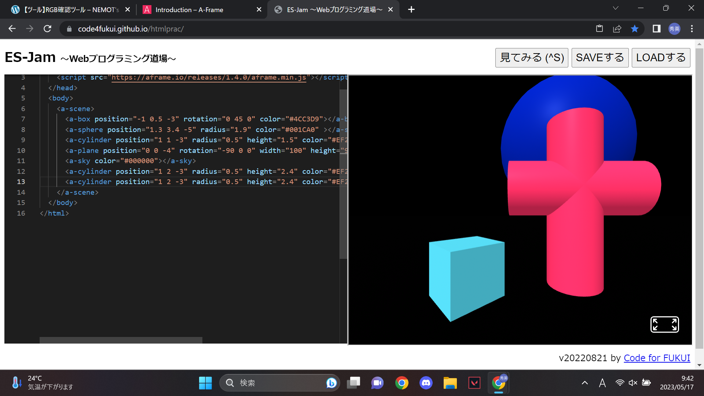
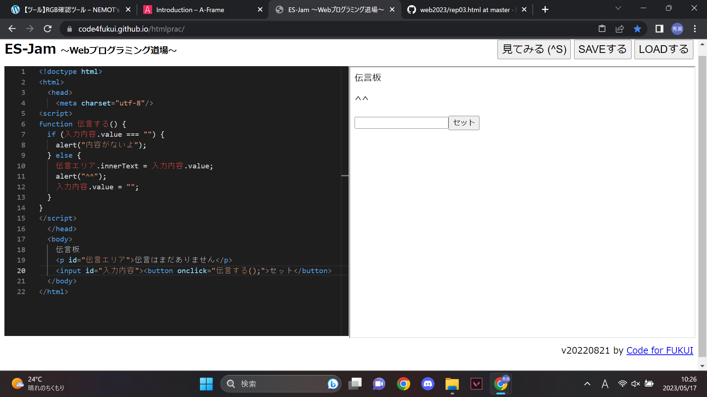

第3週目
3-1 JavaScript体験：VR空間を作る

自作した３次元空間
1.内容
A-Frameのテンプレートを使用して、java scriptで３次元空間での図形を作成した。
テンプレートのコードを変更して、図形の大きさや色、配置などを変えたりした。
2.感想
最初は複雑に見えたコードが、そのコードが何をしているのかが分かると、コードが見えやすくなった。
球と円柱と立方体、直方体のコードしかわからなかったが、この四つだけでもかなりの物を作れるのではないかと考えた。
3-2 JavaScript体験：伝言プログラムを作る

伝言板
1.内容
java scriptで言葉やシステムをかいて伝言プログラムのサイトを作成した。
2.感想
java scriptでシステムを作るとき、コードの最初と最後につける英語はそのコードの働きを意味していることが分かった。
最初からコードを自分で打っていき、だんだんとシステムが完成してくことが面白かった。
3-3 JavaScriptプログラムの３次元空間の体験
1.内容
VRで球をたくさん出したり物をつかんだりできるJavaScriptプログラムの三次元空間の体験をした。
2.感想
打った球の軌道や動いている球に球を当てた時の軌道が全く違和感なくすごいと考えた。
動いている球が自分のほうに来た時、当たるわけでもないのにあたると思って反射でびっくりして面白かった。